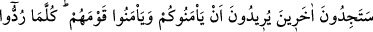
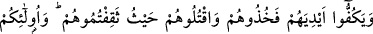
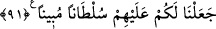

almadan kafirlerle sulh yapmak ve bir kâfiri bile küfür üzere bırakmak câiz değildir.
Fakat müslümanlar kâfirlere karşı koymakta âciz kalır, kendi canları ve zürriyetleri için
korkarlarsa onlardan cizye almaksızın sulh yapmaları caiz olur. Çünkü sulhun
yasaklanması müslümanların kuvvetli olmaları sebebiyledir. Sebep ortadan kalkınca da
sulhun yasak olması ortadan kalkar.
91- Hem sizden hem de kendi toplumlarından emin olmak isteyen başkalarını da
bulacaksınız. Bunlar her ne zaman fitneye götürülseler ona baş aşağı dalarlar
(daldırılırlar). Eğer sizden uzak durmaz, sulh teklif etmez ve ellerini çekmezlerse
onları yakalayın, rastladığınız yerde öldürün. İşte onlar üzerine sizin için apaçık
yetki verdik.
“Hem sizden hem de kendi toplumlarından emin olmak isteyen başkalarını da
bulacaksınız.” Yâni, sizinle sulh hâlinde görünürler ve size karşı müslüman olduklarını
göstermek için kelime-i tevhid getirerek sizden emin olmak isterler, gizli küfürleri
sebebiyle kendi kavimlerinden emin olmak isterler.
Bunlar Esed ve Gatafan kabîlelerinden bir topluluktur. Medîne’ye geldiklerinde
müslüman olmuşlar ve müslümanlardan emîn olmak için anlaşma yapmışlar, kendi
kabîlelerinin yanına dönünce de onlardan emîn olmak için müslümanlarla yaptıkları
anlaşmayı bozmuşlar ve kâfir olmuşlardır.
“Bunlar her ne zaman fitneye götürülseler” kavimleri tarafından ne zaman
müslümanlarla savaşmaya çağırılsalar “fitnenin içine baş aşağı atılırlar”, ona
dönerler ve o fitne içinde çirkin ve kötü kalpli insanlar haline dönüşerek, en şerli
düşmandan daha şerli bir hal alırlar.
“Eğer sizden”, onlar size taarruz etmekten “uzak durmaz sulh teklif etmez”, yâni
barış ve muâhede teklif etmeyip aksine bunları bozar “ve ellerini” de sizinle
savaşmaktan “çekmezlerse onları yakalayın, rastladığınız” ele geçirdiğiniz “yerde
öldürün.”
Sayılan çirkin sıfatlarla vasfedilenler, “İşte onlar üzerine sizin için apaçık yetki
verdik.” Yâni, onların müslümanlara düşmanlıkları ortaya çıktığı, küfürleri, aldatmaları
ve müslümanlara zarar verdikleri ortaya çıkdığı için onlara taarruz edip öldürmeniz ve
esir almanız husûsunda sizlere apaçık bir müsâade verdik.
İlk âyette (88. âyet) işâret olunduğuna göre münâfıkların yüzüstü ve yardımsız